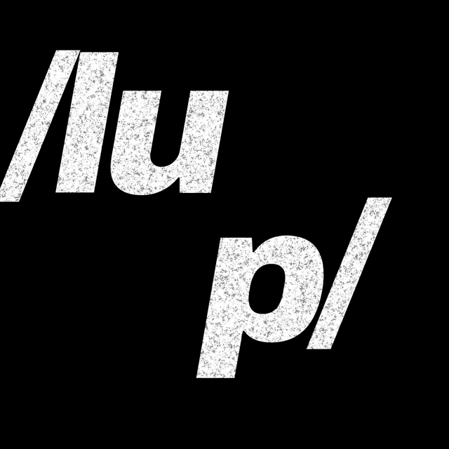

ネガフィルムを、そのまま写真として見る。
lupは、iPhoneをルーペに変えるアプリです。ライトボックスの上のネガにかざすと、写っているものが普通の写真のように浮かび上がります。ベタ焼きをルーペで覗いていた、あの作業の代わりに。
App Storeにて近日公開使い方
- ネガフィルムを、ライトボックスやiPad・パソコンの白い画面の上に置きます。
- iPhoneをネガフィルムにかざすと、写っているものが普通の写真のように見えます。
- シャッターボタンで保存します。左下のサムネイルから、拡大して確認したり、シェアしたりできます。
できること
- カラーネガにも、モノクロネガにも対応しています。
- カラーネガのオレンジ色を、ボタンひとつで補正します。
- ズーム、明るさ、コントラストは親指で回せるダイヤルで調整。もう片方の手でフィルムを押さえたまま使えます。
- 広告なし、サブスクなし、データの収集もありません。
色の再現は簡易的なもので、光源やフィルムによって色ずれが生じます。ピントや構図、露出の確認用としてお使いください。正確な色はスキャンでご確認ください。
/lup/ は、フランス語の「loupe（ルーペ）」の発音から名付けました。写真家が昔からフィルムを覗くのに使ってきた、小さな拡大鏡のことです。
お問い合わせ
ご質問や不具合は support@example.com までお送りください。